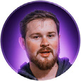

Designer gráfico & front-end · Toledo, Brasil
Gerador de text-shadow em camadas: ajuste os passos, veja o efeito e copie o CSS pronto — com as cores já em variáveis. Designer gráfico desde 2010.
text-shadow
© 2026 Everson Mayer · feito com HTML, CSS e JS puro, sem build.